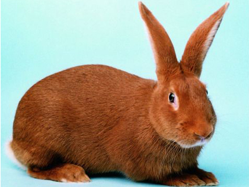
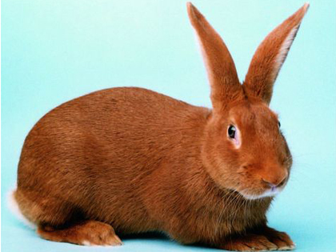
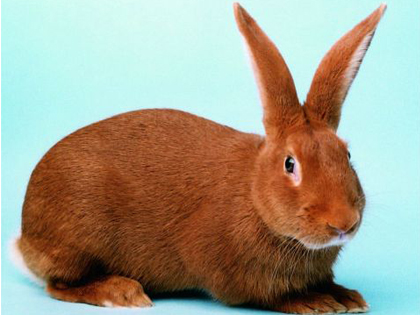
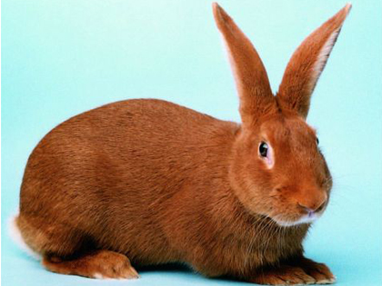

ახალზელანდიური წითელი, გახლავთ როგორც სახორცე
ასევე საბეწვე მიმართულების ბოცვერი რომელიც
გამოყვანილი იქნა
ამერიკის შეერთებულ შტატებში
მეოცე საუკუნის დასაწყისში.მისი საშუალო წონა
3,5-5კგ მდე მერყეობს,ტანის სიგრძე 47-50 სმ -ა
უნდა აღინიშნოს ისიც რომ
დედლები უფრო გრძელები
არიან ვიდრე მამლები.